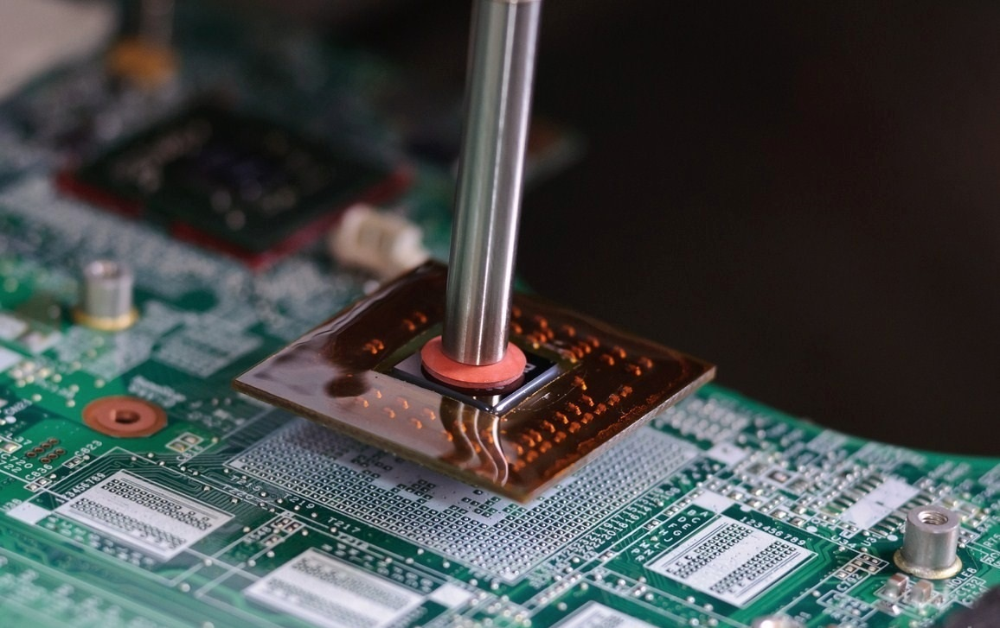

SERVICIO DE REBALLING
Conoce este servicios

¿Has tenido algún problema de estos? Tu equipo enciende pero no da imagen en la pantalla, enciende y se apaga instantáneamente, muestra mala calidad en la imagen, se sobrecalienta, se apaga sin previo aviso, se reinicia constantemente, cuando la apagas, se enciende sola, tiene fallas de conexión con el WI-FI.
Contamos con el único Centro de Servicio Técnico altamente calificado y capaz de realizar trabajos de Reballing BGA, o microelectrónica, reparando así defectos de fabricante que pueda traer tu equipo como cualquier problema de software (errores de sistema operativo, virus, drivers, sistema de archivos, etc.). Todas tus reparaciones tienen garantía. Con precios especiales a técnicos y mayoristas.